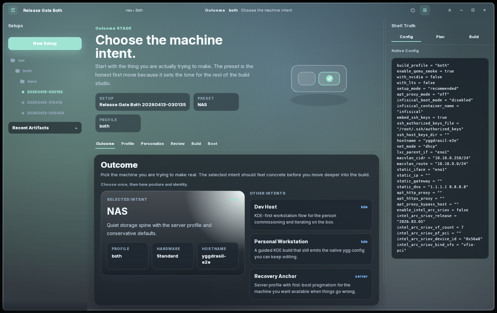

1
Choose the machine intent.
The flow opens on outcome, not checkboxes. The operator picks the machine they are trying to make real, and the app uses that to set the tone for everything that follows.
Preset cards make the product posture readable at a glance: NAS, Dev Host, Personal Workstation, or Recovery Anchor.
The selected intent is spotlighted while alternative intents remain visible, keeping the decision explicit and reversible.
